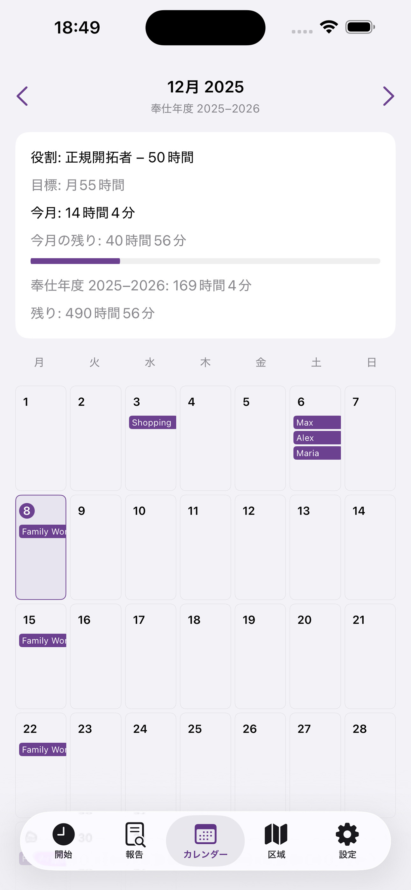
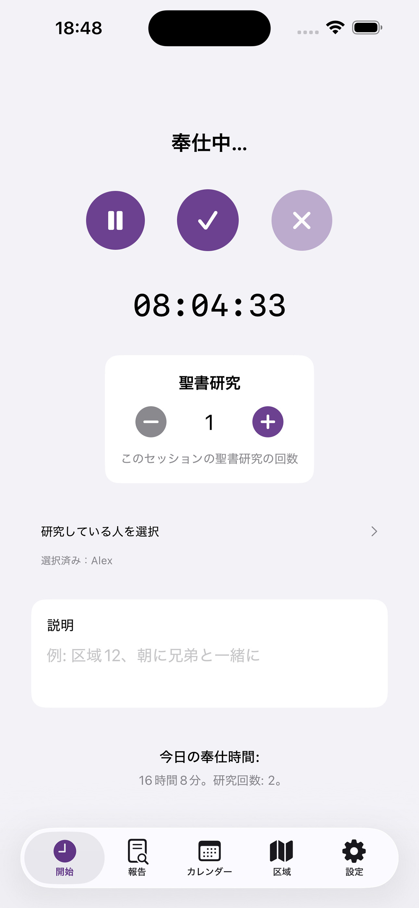
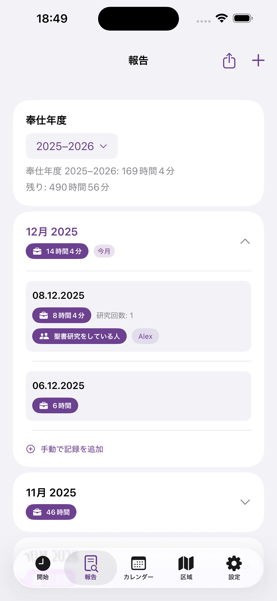
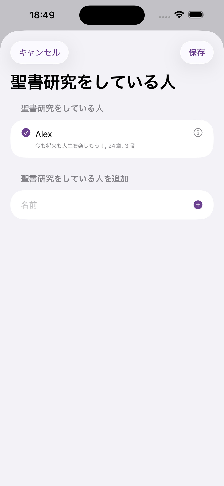
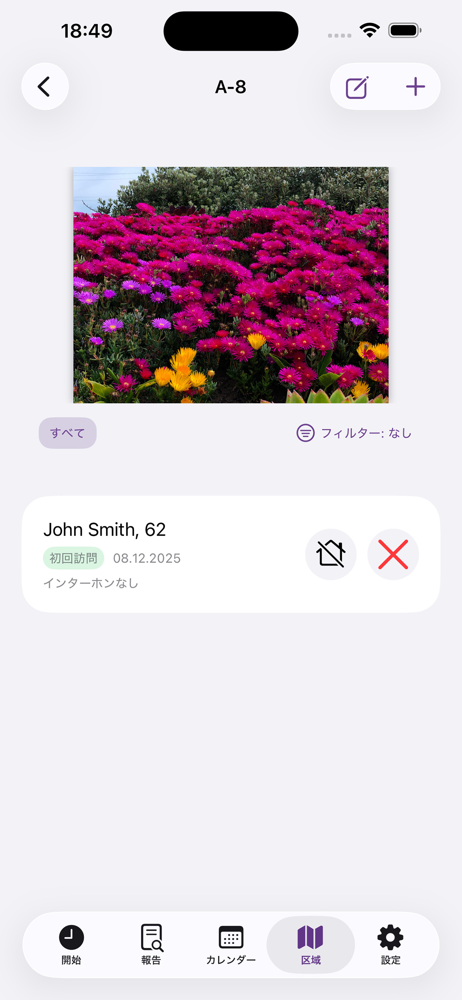
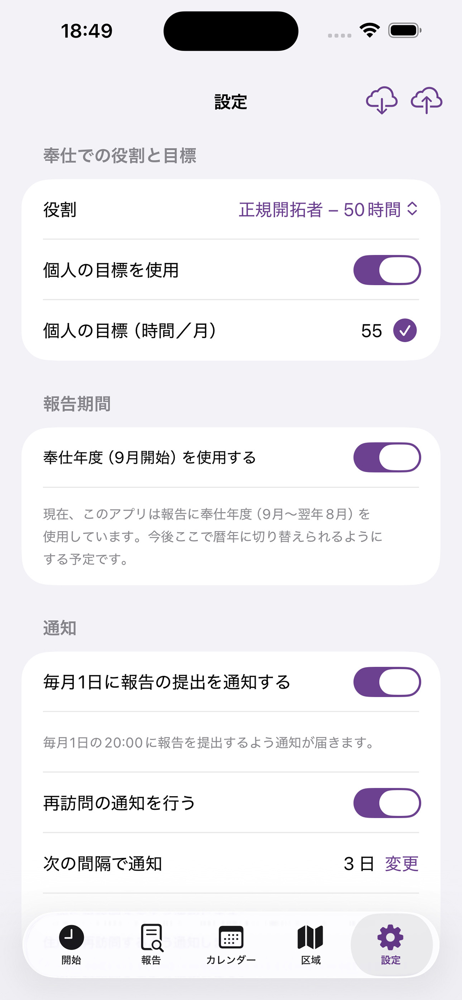
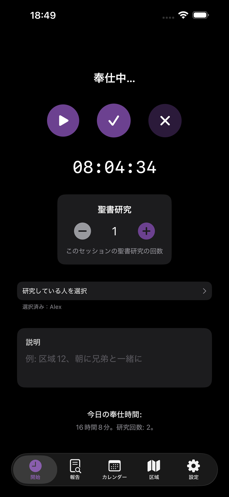
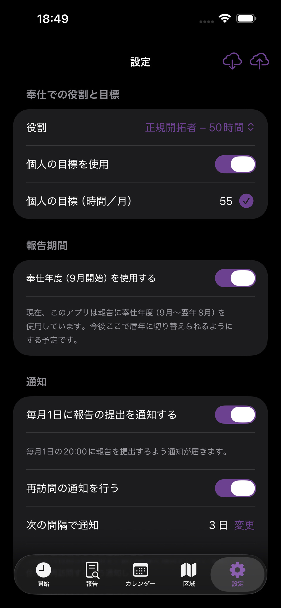

野外奉仕と開拓奉仕のためのオールインワン管理アプリ
JW Ministryは、エホバの証人の伝道者や開拓者のために設計されたiPhone・iPad用アプリです。Live Activities対応の奉仕タイマー、聖書研究生の進度管理、奉仕年度の報告、開拓者の目標時間、個人区域や再訪問の記録を100%端末内で安全に管理できます。



JW Ministryの全8画面プレビュー
日本語インターフェースの実際のスクリーンショットです。奉仕タイマー、聖書研究生リスト、開拓者カレンダー、区域カード、OLEDダークモードをご覧いただけます。







秩序ある宣教と開拓奉仕に必要なすべての機能
伝道者、補助開拓者、正規開拓者、特別開拓者の実際の奉仕スタイルに合わせて設計されています。
スマートタイマー・ウィジェット・Dynamic Island
アプリ、ホーム画面ウィジェット、ロック画面からワンタップで計測開始。ロック中もDynamic Islandで経過時間をリアルタイムに確認できます。
聖書研究の記録と教材の進度管理
行った聖書研究を日々の報告にリンク。『いつまでも幸せに暮らせます』などの現在の課やセクションを研究生ごとに記録できます。
すべての奉仕の役割と個人の目標時間
伝道者、補助開拓者（15時間・30時間）、正規開拓者（50時間）、特別開拓者（90・100時間）に加え、個人の月間目標（例：55時間）も設定可能です。
奉仕年度（9月〜8月）＆開拓者カレンダー
奉仕の予定や家族の崇拝をカレンダーに登録。予定時間と実績時間を比較し、予定をスワイプするだけで報告へ変換できます。
個人区域・集合住宅生成・再訪問リマインダー
区域地図の写真添付、10色のカラータグ、マンションの階・号室の一括生成に対応。住所や名前での高速検索と再訪問の自動通知機能を備えています。
100%端末内プライバシー保護＆iCloudバックアップ
アカウント登録不要、外部サーバーへの送信ゼロ。すべての記録と区域写真はiPhone・iPad内にのみ保存され、iCloud Driveへ簡単にバックアップできます。
バージョン 1.8 の新機能
- カレンダーでの月間予定時間の自動集計と「予定 vs 実績」ダブル進捗バー。
- カレンダーの予定をスワイプ1つで報告エントリへ変換（予定時間から自動差し引き）。
- すべての区域を対象とした住所・居住者名の即時検索と、10色の区域カードテーマ。
- 「報告」タブでの次期奉仕年度（2026–2027）の選択と年間サマリー表示。
- 最新iOS・iPadOSへの完全最適化とバックアップ保護の強化。
多くの伝道者・開拓者が JW Ministry を選ぶ理由
野外奉仕の記録、開拓スケジュール管理、区域記録の比較表です。
| 機能 | 紙のメモ帳 | 従来の古いアプリ | JW Ministry 1.8 |
|---|---|---|---|
| ロック画面＆Dynamic Islandでのライブタイマー | なし | なし | 対応（Live Activities） |
| 開拓目標（15・30・50時間）と奉仕年度（600時間）の自動計算 | 手計算 | 一部のみ | 自動計算＋個人目標設定 |
| カレンダーの「予定 vs 実績」比較＆スワイプで報告へ変換 | なし | なし | ワンタップで変換 |
| 集合住宅の部屋番号自動生成＋区域地図写真＆10色タグ | 紙のカード | テキストのみ | 写真付きカード＋高速検索 |
| 再訪問リマインダー＆毎月1日20時の報告リマインダー | なし | 簡易的 | iOSスマート通知 |
| 100%オフライン保護＆写真を含むiCloud Drive完全バックアップ | 紛失のリスク | 機種変更時の不具合 | 100%端末内保存＆簡単復元 |
| 最新iOS・iPad・OLEDダークモード・35以上の言語に対応 | — | 更新停止 | 最新SwiftUIネイティブ設計 |
エホバの証人の野外奉仕・開拓奉仕を徹底サポート
JW Libraryと併用して、奉仕年度を通して伝道者・補助開拓者・正規開拓者の奉仕を整理できます。
正規開拓者・特別開拓者（月50・90・100時間／奉仕年度600時間）
9月から8月までの奉仕年度における月50時間・年間600時間の目標と残り時間を自動計算します。個人の月間目標（例：55時間）を設定し、カレンダーで予定時間と実際の奉仕時間を比較できます。
- 月50時間・奉仕年度600時間の自動バランス計算
- 個人の月間目標時間（例：55時間）の設定
- 予定時間と実績時間を比較するダブル進捗バー
補助開拓者（15時間・30時間）と会衆の伝道者
特別キャンペーン月や巡回監督の訪問、記念式の時期にはワンタップで補助開拓者（15時間または30時間）に切り替え可能。毎月1日20時の自動リマインダーで野外奉仕報告の提出忘れを防ぎます。
- 15時間・30時間の補助開拓目標へのワンタップ切り替え
- 毎月1日にワンタップで奉仕報告を作成・共有
- 毎月1日20:00の報告提出リマインダー通知
家から家の区域管理・マンション生成・再訪問の記録
区域地図の写真を添付し、集合住宅の号室を一括生成。「初回訪問」「留守」「断り」の記録やインターホン等のメモを残し、住所や名前で瞬時に検索できます。
- 集合住宅（マンション・アパート）の階・号室ジェネレーター
- 区域地図の写真・10色分け・名前や住所での即時検索
- 指定日数経過後の再訪問リマインダー通知
聖書研究生の進度管理＆古いアプリの最新代替
『いつまでも幸せに暮らせます』の課とセクションを研究生ごとに記録。ServicePlannerやMyTimeの最新iOS・iPadOS向け代替アプリとして最適です。
- 『いつまでも幸せに暮らせます』の課・セクション進度記録
- ウィジェット・Dynamic Island・OLEDダークモード完全対応
- ServicePlannerやMyTimeに代わる最新の無料iOSアプリ
伝道者・開拓者からのレビュー
毎日の宣教で JW Ministry を活用している兄弟姉妹の声です。
“カレンダーに月間の予定時間と実績時間が並んで表示されるので、50時間の計画が立てやすくなりました。”
“ロック画面のライブタイマーと、カレンダーの予定をスワイプして報告に移せる機能が本当に便利です。広告もなく安心して使えます。”
“マンションの部屋番号生成と区域内の名前検索のおかげで、紙の留守宅メモを持ち歩く必要がなくなりました。”
35以上の言語に完全対応
アプリの画面、ウィジェット、通知はお使いのiPhone・iPadの言語に自動で切り替わります（下の言語名をタップするとスクリーンショットをプレビューできます）：
JW Ministry の開発を支援する
JW Ministry は広告や有料プランなしで無料提供されています。もしこのアプリが宣教のお役に立っていましたら、今後のiOSアップデート開発やApple Developer年会費の維持をご支援いただけますと幸いです：
暗号資産での直接支援（手数料0%）
開発者のウォレットへ直接送金：
TQQxYhThQGngj887Lvq9TnKtyyYMcUDFNw
UQBNBroTUyMG0YqgiHGXwVKO_rKe5d2y7gXqvICREjBwuKYk
よくある質問（FAQ）
JW Library アプリとどのように使い分けますか？
公式アプリの JW Library は聖書や出版物の閲覧・集会の予習に使用し、JW Ministry は個人の野外奉仕時間の計測、開拓者のスケジュール管理（15・30・50時間）、個人区域の留守宅・再訪問記録、聖書研究生の進度管理のために使用します。
奉仕報告や区域のメモはどこに保存されますか？
お使いのiPhoneまたはiPadの端末内にのみ保存されます。外部サーバーへのデータ送信は一切ないため、個人のメモは完全に守られます。
新しいiPhoneやiPadへデータを引き継ぐには？
「設定」タブ右上のクラウド出力アイコンからiCloud Driveへバックアップファイルを保存し、新しい端末で読み込むだけで写真も含めて完全に復元できます。
インターネット接続がない場所でも使えますか？
はい、100%オフラインで動作します。電波のない場所でもタイマーや区域カードをご利用いただけます。